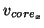
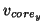
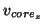
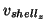

Box Keyword: .<Velocity>
This box contains the initial velocities of all the free atoms in the system, and is only read in if vel_key in the MDcontrol box is set to 1, otherwise velocities are generated according to the given system temperature. The velocities given in this box must be in exactly the same order as the atomic coordinates in order to correspond to the correct atoms, if atoms have shells shell velocities can be given, otherwise the shell velocities are set equal to the atomic velocities. The units are Å/ps, and the format is as follows:



